Iron fences are tools of keeping people in and out of space. They separate the public and private areas. As I was exploring different types of fence design, I realized how they have soft elegant curves and sharp edges at the same time. I connected this with physical form of human behavior because the contrast between softness and sharpness reflects the people being both approachable and protective. This collection explores how the design of a fence can shape our sense of belonging before we even enter a space.
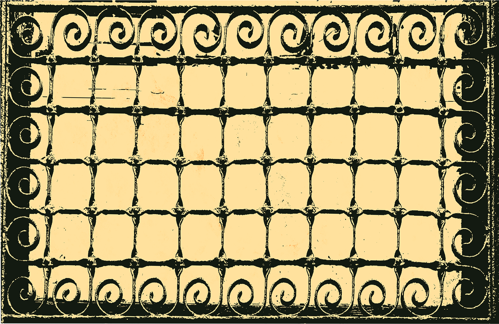
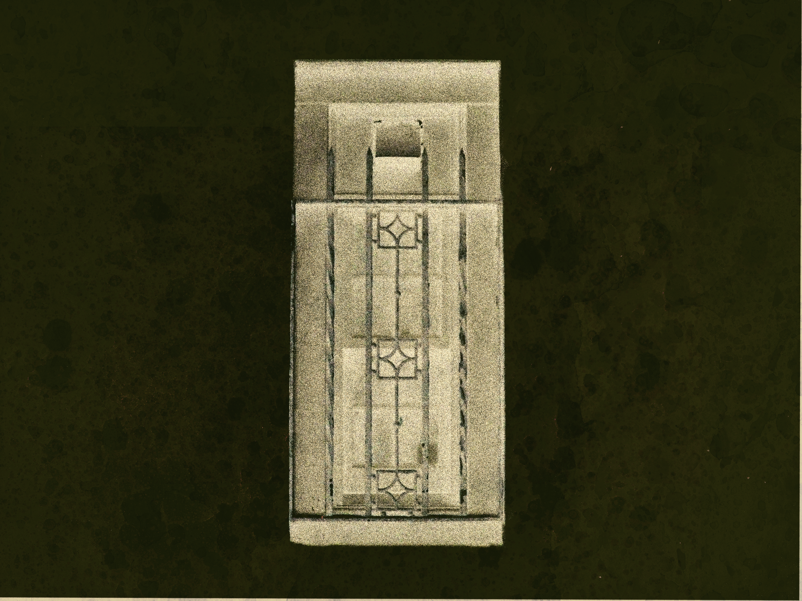
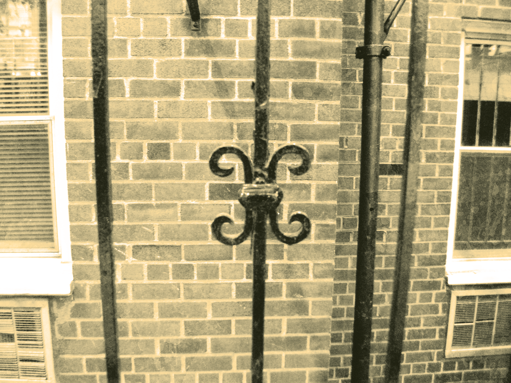
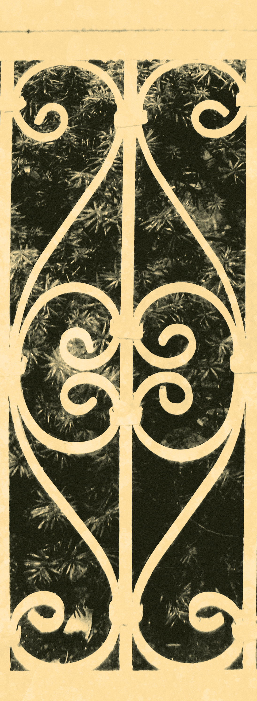
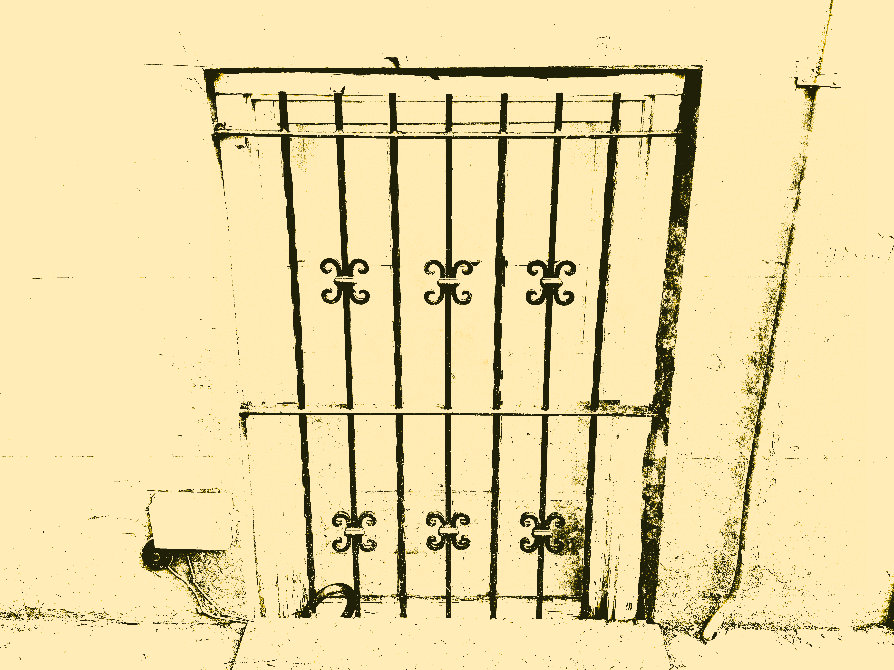
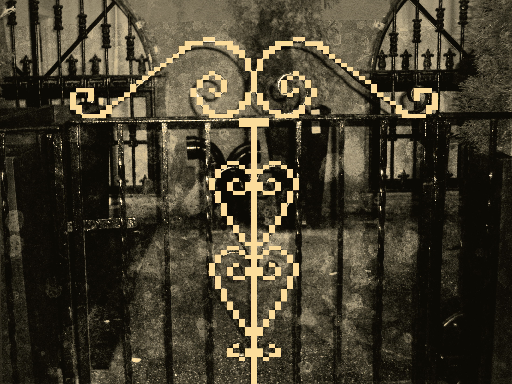
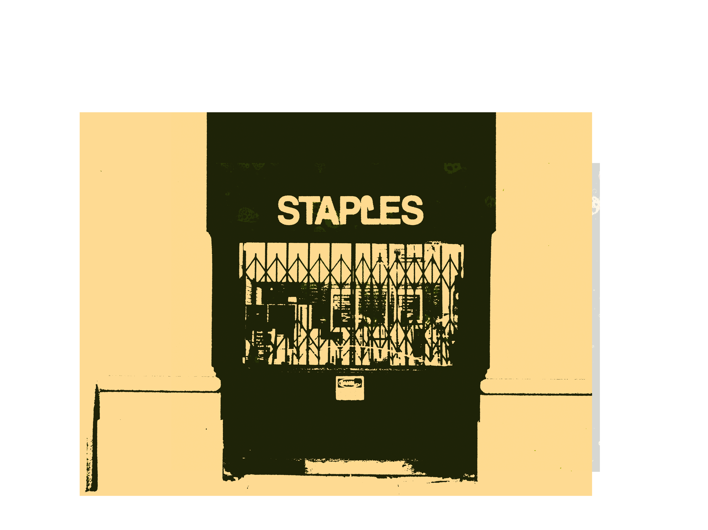
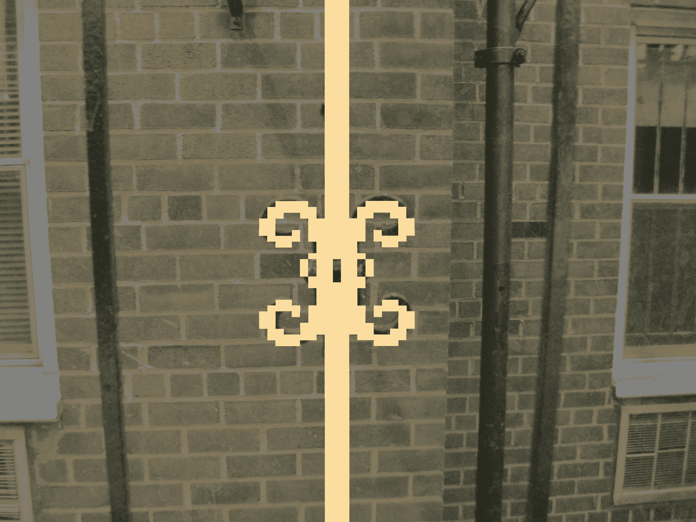
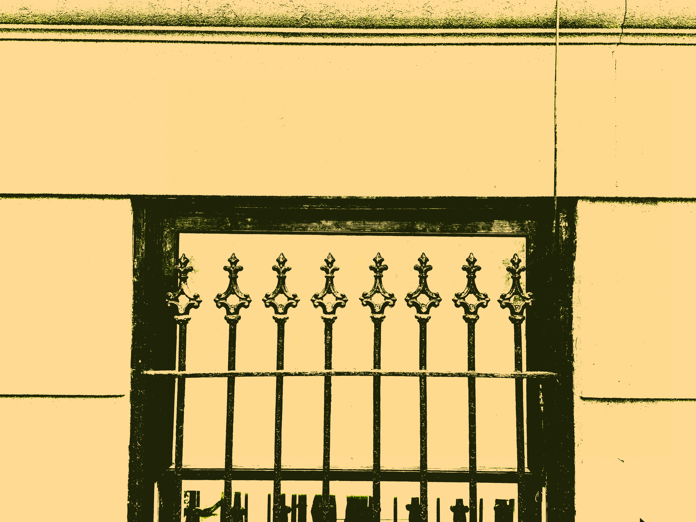
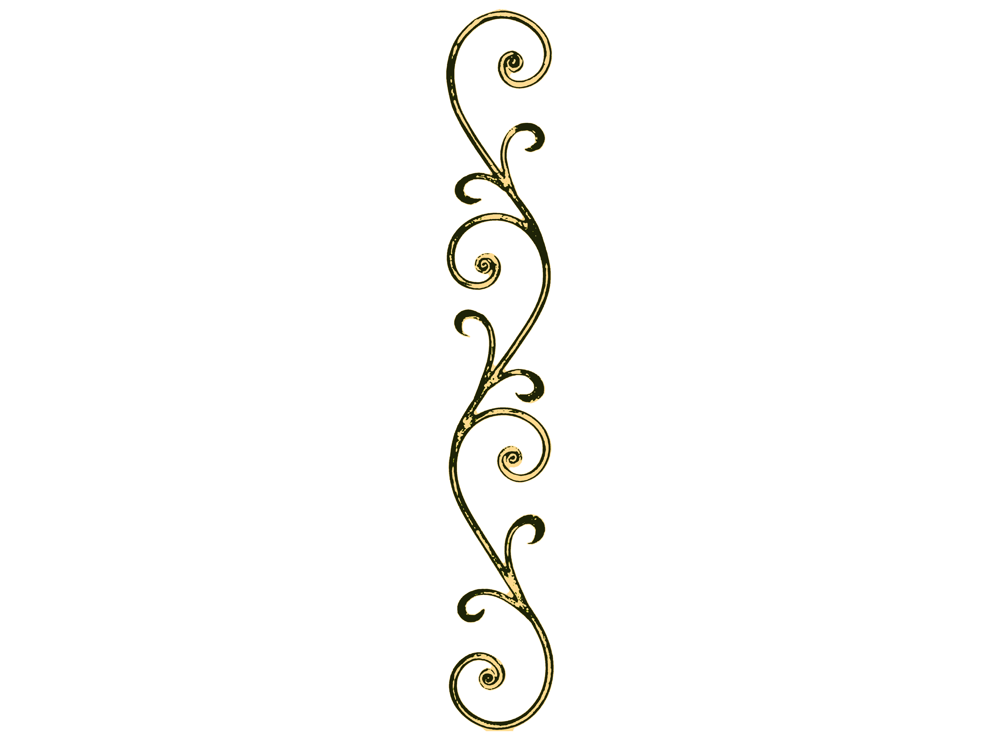
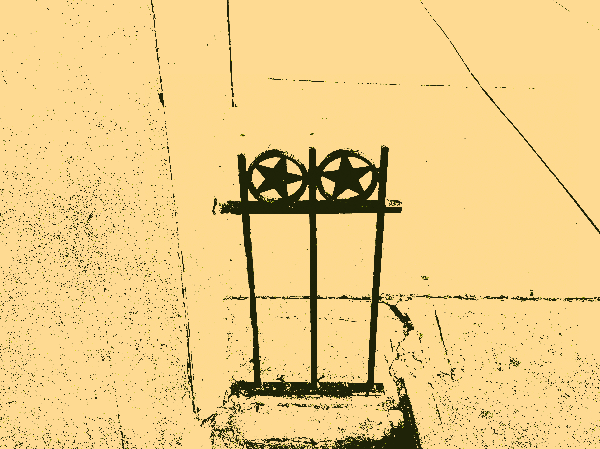
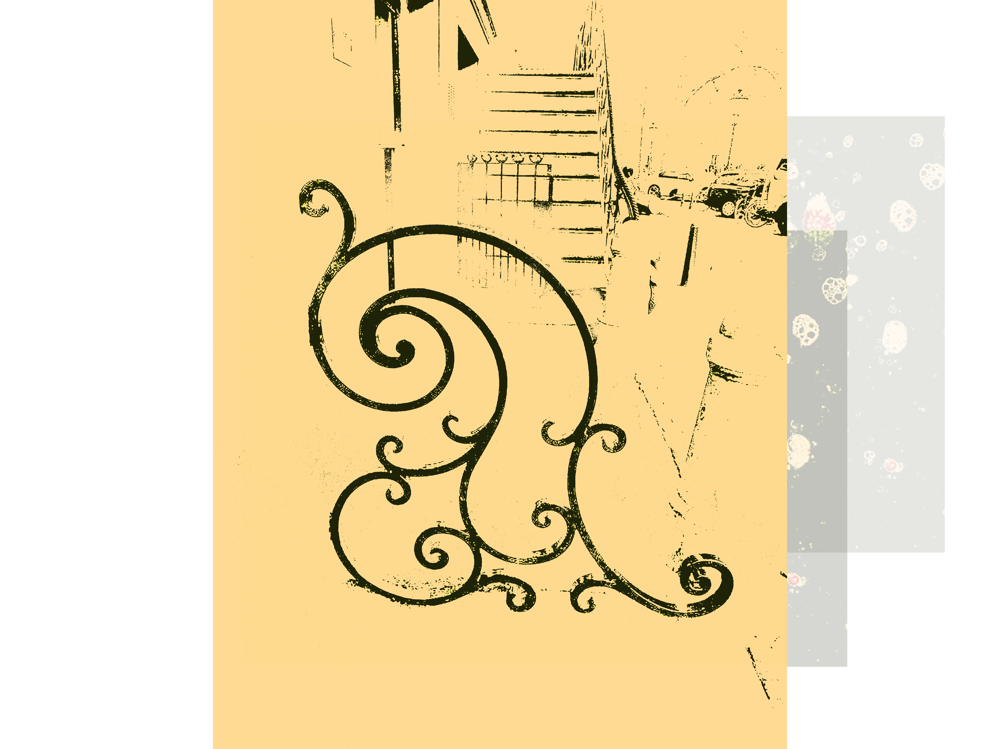
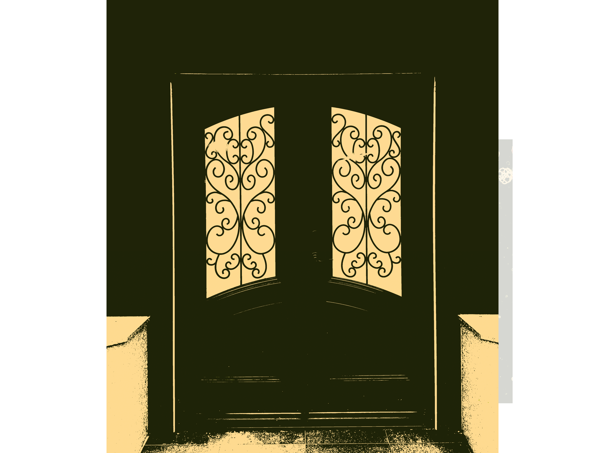

Mending Wall
By Robert Frost
Something there is that doesn’t love a wall, That sends the frozen-ground-swell under it, And spills the upper boulders in the sun; And makes gaps even two can pass abreast.
The work of hunters is another thing: I have come after them and made repair Where they have left not one stone on a stone, But they would have the rabbit out of hiding, To please the yelping dogs. The gaps I mean,
No one has seen them made or heard them made, But at spring mending-time we find them there. I let my neighbor know beyond the hill; And on a day we meet to walk the line And set the wall between us once again.
We keep the wall between us as we go. To each the boulders that have fallen to each. And some are loaves and some so nearly balls We have to use a spell to make them balance:
‘Stay where you are until our backs are turned!’ We wear our fingers rough with handling them. Oh, just another kind of out-door game, One on a side. It comes to little more:
There where it is we do not need the wall: He is all pine and I am apple orchard. My apple trees will never get across And eat the cones under his pines, I tell him. He only says, ‘Good fences make good neighbors.’
Spring is the mischief in me, and I wonder If I could put a notion in his head: ‘Why do they make good neighbors? Isn’t it Where there are cows? But here there are no cows.
Before I built a wall I’d ask to know What I was walling in or walling out, And to whom I was like to give offense.
Something there is that doesn't love a wall, That wants it down.’ I could say ‘Elves’ to him, But it’s not elves exactly, and I’d rather He said it for himself. I see him there
Bringing a stone grasped firmly by the top In each hand, like an old-stone savage armed. He moves in darkness as it seems to me, Not of woods only and the shade of trees.
He will not go behind his father’s saying, And he likes having thought of it so well He says again, ‘Good fences make good neighbors.’